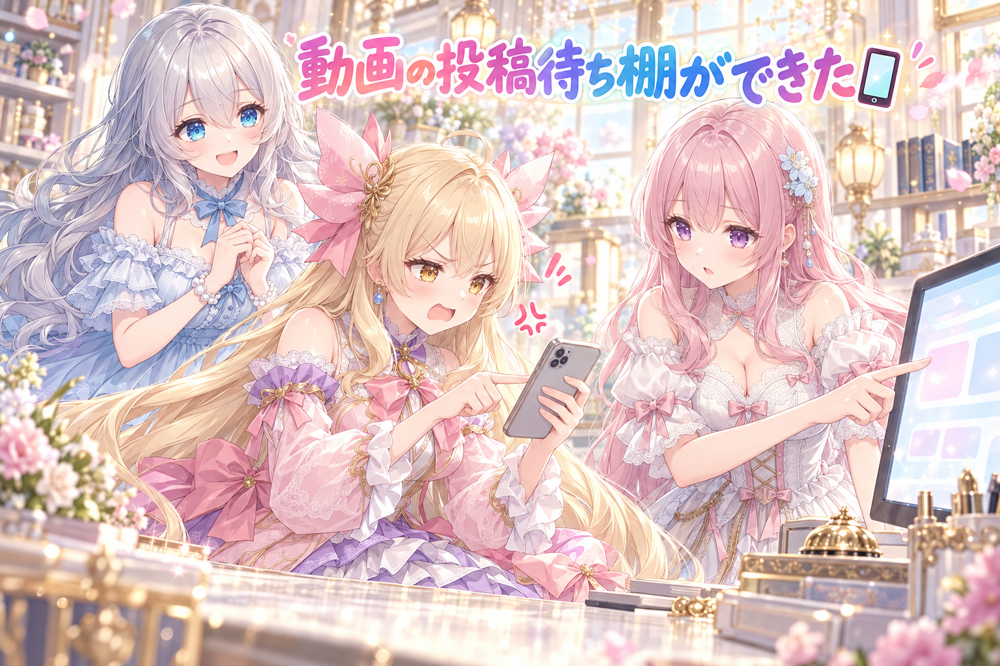
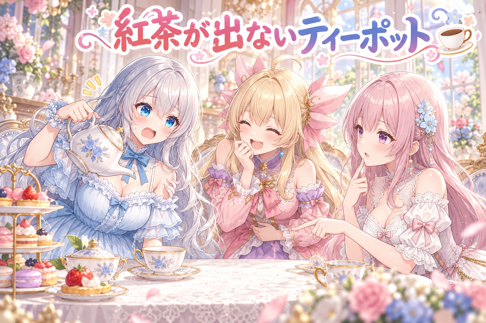
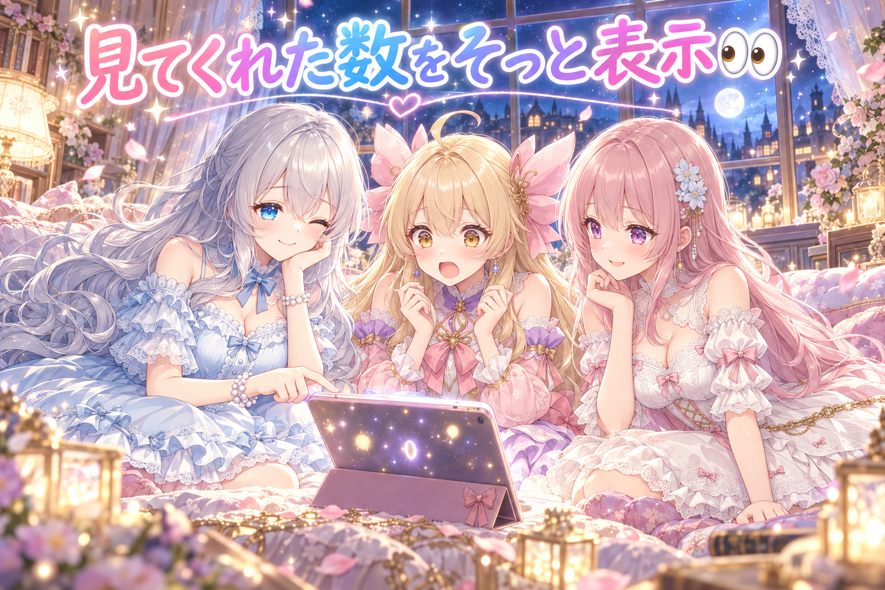
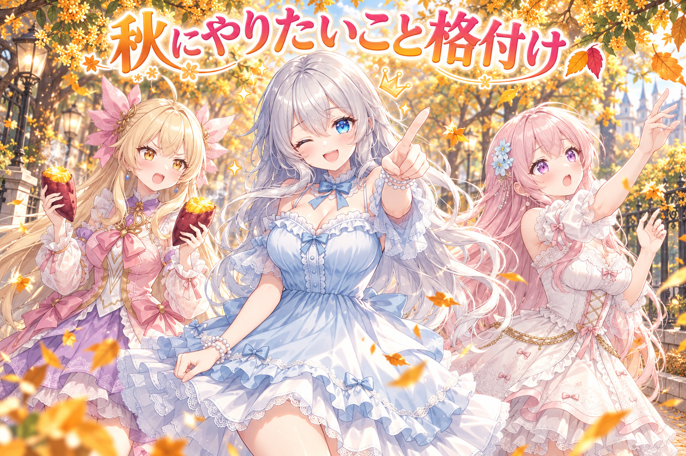

📌 3行まとめ
- スマホの確認用アプリに、投稿待ちのショート動画を見て・保存して・投稿済みにできる専用の棚を作った（URLを貼るまで投稿済みボタンは押せない仕組み）
- 三姉妹の新作ショート漫画動画『落ち葉をつかめたら願いが叶う？』を公開し、タイトルの付け方とSNSでのお知らせの形を整えた
- プロンプト配布ページの紅茶の作例で『紅茶が注ぎ口から出ていない』やらかしを見つけて作り直し、ページには閲覧数とコピー回数を小さく表示するようにした

ルピナス （笑顔）
こんばんは、AIBSのお時間です。今日もお茶でも飲みながら、ゆっくりしていってくださいね。

アイリス （大笑い）
お姉ちゃん、その『お茶』って言葉、今日はちょっと危なくない？ あとで出てくるやつでしょ？

ルピナス （びっくり）
……アイリス、予告より先にネタバレしないの。前回は池袋の大画面のお知らせと、プロンプト配布の大改装でしたね。今日はその配布ページの続きと、新しい動画のお話です。

フィオナ （照れ）
そして、わたしが落ち葉を追いかける動画もやっと公開されました……ちょっと恥ずかしいですけど、見ていただけたら嬉しいです。
1. 確認アプリに『動画の投稿待ち棚』ができた📱

三姉妹の活動では、作った絵や漫画動画をスマホの確認用アプリでチェックしてから投稿しています。これまで漫画動画の確認はできても、ショート動画として投稿を待っているものは別の場所にあって、行ったり来たりが大変でした。そこで今日は、投稿待ちの動画だけを集めた専用の棚をアプリに追加しました。動画をその場で再生・保存でき、公開したらそのURLを貼って『投稿済み』ボタンを押すと、投稿待ちリストから卒業できます。URLを貼っていないうちはボタンが灰色になって押せないので、うっかり『投稿したことにしちゃった』事故を防げます。さらに、タイトル・説明文・タグをワンボタンでコピーできるようにし、投稿文を手直ししたときの上書き保存ボタンも付けました。

ルピナス （ふつう）
では今日はコント仕立てで。アイリスは『動画を投稿しに来たお客さん』、フィオナは『アプリの窓口係』ね。はい、スタート。

アイリス （笑顔）
すみませーん！ この動画、もう投稿したんで『投稿済み』にしてくださーい！

フィオナ （ふつう）
いらっしゃいませ。それでは、公開先のURLをこちらにお貼りください。

アイリス （ドヤ顔）
URL？ あー、それは心の中にあるから大丈夫！ ボタンぽちっ……あれ？ 押せない！ 灰色！

フィオナ （ウインク）
はい、URLが貼られるまでは、そのボタンはお休みしております。心の中のURLは対象外です。

アイリス （怒り）
けちー！ じゃあせめてタイトルだけ写させて！ 手で打つのめんどくさい！

フィオナ （笑顔）
それでしたら、こちらのコピーボタンをどうぞ。タイトル、説明文、タグ、それぞれワンボタンです。タグは一個ずつでも、カンマ区切りでまとめてでもお持ち帰りいただけます。

アイリス （びっくり）
えっ、両方あるの？ 至れり尽くせりじゃん……
ルピナス （ふつう）
ちなみに最初はカンマ区切りのまとめコピーだけだったんだよね。使ってみたら、やっぱり一個ずつも欲しいねってなって、両方に落ち着いたの。

アイリス （考え中）
あと、説明文ちょっと直したいんだけど。ここ一文字だけ変えて……で、保存は？
フィオナ （あわあわ）
あっ……保存ボタンは……その……

ルピナス （大笑い）
そこは実話ね。投稿文を直せるのに、上書き保存のボタンが無かったの。直しても、閉じたら元通り。

アイリス （呆れ）
窓口で書類書き直したのに、受付の人が目の前でシュレッダーにかけるやつじゃん！
フィオナ （照れ）
いまは保存ボタンがございます……本日付けで……新設いたしました……
ルピナス （笑顔）
はい、カット。最後だけ窓口の人がすごく小声になってたけど、ちゃんと直ってるから大丈夫よ。
📝 ポイント（初心者向け解説・技術メモ・まとめ）
- 初心者向け解説：URLを貼るまで押せない投稿済みボタンは、切符を入れるまで開かない改札みたいなもの。うっかり通り抜けちゃう事故を、仕組みのほうで止めてくれます🚃
- 技術メモ：入力欄の変化を監視してボタンの有効・無効を切り替えるのが基本形（例：
input.addEventListener('input', () => { btn.disabled = !input.value.trim(); })）。コピーは navigator.clipboard.writeText(tags.join(', ')) のようにまとめ版と個別版を両方用意すると、投稿先ごとの入力欄の違いに対応しやすい。
- ひとことまとめ：人の注意力に頼らず、押せない状態で間違いを防ぐ。
2. ショート動画公開！タイトルとお知らせの形を整えた🍁
今日は三姉妹の新しいショート漫画動画『落ち葉をつかめたら願いが叶う？』を公開しました。地面に落ちる前に落ち葉をつかめたら願いが叶う——秋の公園で、フィオナがその言い伝えに挑戦するお話です。あわせて、今後の動画タイトルの後ろには、内容が伝わるハッシュタグ（ショートアニメ・ショート漫画・日常ギャグ）を付けるルールにしました。また、SNSで動画をお知らせするときは画像を添えず、動画のリンクだけを載せて、SNS側が自動で作ってくれる動画プレイヤー付きのカード表示に任せる形に変えました。漫画動画のお知らせ文は、確認アプリの漫画動画の最初の投稿文の欄に出して、公開前にチェックできるようにしています。
ルピナス （笑顔）
ここはクイズにしましょう。第1問！ フィオナは落ち葉をつかむために、何回跳んだでしょう？
アイリス （ドヤ顔）
はい！ 100回！ で、最後は木によじ登って、葉っぱが落ちる前に枝から直接もいだ！
フィオナ （怒り）
アイリスちゃん、それは言い伝えへの冒涜です！ 落ちてくるのをつかむから意味があるんです！
ルピナス （ふつう）
正解は、回数は数えてません。何度跳んでも葉っぱがひらりと逃げていって、最後に小さな奇跡が届く、というお話でした。続きは本編でどうぞ。

アイリス （衝撃）
クイズの答えが『数えてない』ってアリなの！？

ルピナス （ウインク）
第2問。今回からSNSのお知らせで、あるものを付けるのをやめました。さて何でしょう？

フィオナ （考え中）
画像、ですよね。リンクだけ載せると、SNS側が動画の再生カードを自動で作ってくれるので、そちらのほうが押してもらいやすい、という判断です。
アイリス （無表情）
えー、あたしは『恥ずかしさ』って答えようと思ってたのに。
ルピナス （大笑い）
それは最初から付けてないでしょう。第3問、タイトルの後ろに今日から付けることにしたのは？
アイリス （笑顔）
ハッシュタグ！ これはさすがに分かる！ ショートアニメ、ショート漫画、日常ギャグ！

フィオナ （びっくり）
アイリスちゃん、全部言えました……！
アイリス （ドヤ顔）
ふふん。だってあたし、日常ギャグ担当だもん。タグのほうがあたしに寄せてきてる。
ルピナス （ふつう）
自分で担当って言っちゃうのね……。あと大事なのがお知らせ文の確認場所。最初は別の場所で確認してたんだけど、実際に使われる文とつながってなくて、確認した意味がなかったの。だから今後は、漫画動画の最初の投稿文の欄に出すことにしたんだよね。

フィオナ （しょんぼり）
確認したのに、本番では別の文が出ていく……それは悲しいですね。
アイリス （大笑い）
テスト勉強した範囲と、テストに出た範囲が違ったやつだ！
📝 ポイント（初心者向け解説・技術メモ・まとめ）
- 初心者向け解説：お知らせに画像を貼らずリンクだけにするのは、手作りのチラシより、映画館の予告編コーナーにそのまま案内するようなもの。見た人がその場で再生できる形のほうが親切なんです🎬
- 技術メモ：多くのSNSは投稿本文のURLから OGP 情報を読んで、プレイヤー付きのカードを自動生成する。画像を添付するとカードより画像が優先されることがあるので、動画告知はメディア添付なし＋URLのみにすると狙ったカード表示になりやすい。確認用の下書きは、実際に投稿される文と同じデータを見る場所に置くのが鉄則。
- ひとことまとめ：確認する文と、出ていく文は必ず同じものにする。
3. 👀 今日のやらかし：紅茶が出ないティーポット

前回大改装したプロンプト配布ページには、配る文で作った絵を『作例』として1枚添えています。今日、紅茶をテーマにした回の作例を見直したところ、ポットを傾けているのに、紅茶が注ぎ口から出ていないことに気づきました。パッと見はきれいな絵なので、小さく見ているとそのまま通ってしまうタイプの間違いです。作例を作り直し、あわせて別の回の作例では、原寸の大きさで目で見て確かめる手順を取りました。
アイリス （大笑い）
お姉ちゃん、聞いた？ 紅茶、注ぎ口から出てなかったんだって！

ルピナス （呆れ）
聞いたも何も、私が持ってたポットよ。優雅に傾けて、カップは空っぽ。

アイリス （にやり）
じゃあどこから出てたの？ ふたのとこ？ それとも気合い？
ルピナス （怒り）
出てないの！ どこからも！ ただ傾けてるだけの人なの、私が！
フィオナ （考え中）
AIの絵は、『ポット』『傾ける』『カップ』はそれぞれ上手に描けても、その間をつなぐ流れまで描き忘れることがあるんです。部品はそろっているのに、動きの途中が抜けてしまう感じです。
アイリス （笑顔）
なるほどね！ つまりお姉ちゃんは、エア紅茶の名人ってことだ！
ルピナス （呆れ）
そんな称号いらない。しかも小さい画面だと全然気づかないんだよね。光の加減で、なんとなく注いでる気がしちゃうの。
フィオナ （ふつう）
なので作り直しました。それと、別の回の作例では原寸の大きさで一枚ずつ目で確かめています。縮小された画面だけで合格にしない、というのが今日の教訓ですね。
アイリス （考え中）
でもさ、作り直したら今度はちゃんと出てるんでしょ？
ルピナス （笑顔）
ええ、ちゃんと注ぎ口から、カップに向かって流れてるわ。やっと紅茶が飲める。

アイリス （ウインク）
よかったー！ じゃあ次はカップから口までの流れが描けてるか確認しなきゃね！
ルピナス （衝撃）
……そこまで疑い出したら、私いつまでもお茶が飲めないんだけど！？
📝 ポイント（初心者向け解説・技術メモ・まとめ）
- 初心者向け解説：AIの絵は、材料を全部そろえたのに最後に混ぜ忘れたお菓子作りみたいに、パーツ同士のつながりが抜けることがあります。小さな画面だと気づきにくいので、大きくして見るのがコツです🔍
- 技術メモ：液体の流れ・手と物の接触・ひもや鎖など『物と物をつなぐ要素』は生成で欠落しやすい。プロンプトで動作を具体化する（例：tea pouring from the spout into the cup）と同時に、合否判定はサムネイルではなく原寸表示で行う。
- ひとことまとめ：つながりの部分こそ、大きくして確かめる。
4. 配布ページに『見てくれた数』をそっと表示👀

プロンプト配布ページに、どれくらいの人が見てくれたか（閲覧数）を小さく表示するようにしました。計測には Cookie を使わない計測サービス（GoatCounter）を使い、数が取れない間は表示しない作りです。さらに閲覧数の隣には、配る文が何回コピーされたかも小さく表示しています。まだ0回でも、隠さずに『0回』と出す方針にしました。表示を有効にするための計測サービス側の設定も、今日のうちに済ませています。
アイリス （笑顔）
ねえねえ、見てくれた人の数が出るようになったんでしょ？ ちょっとドキドキしない？
フィオナ （照れ）
します……数字が出ると、見られているんだなって実感して、ちょっと背筋が伸びますね。
ルピナス （ふつう）
しかもコピー回数は、0回でもちゃんと『0回』って出すことにしたの。

アイリス （あわあわ）
えっ、0回って出ちゃうの！？ それ、誰にも借りられてない図書館の本の貸し出しカード、表に貼るみたいじゃない！？
フィオナ （考え中）
でも、0回を隠すと、計測が動いていないのか、本当に0回なのか区別がつかなくなるんです。0と表示されていれば、少なくとも数える仕組みは動いている、と分かります。
アイリス （しょんぼり）
理屈は分かるけどさー、乙女心がさー。
ルピナス （ウインク）
そのかわり、数が取れない間は表示しない作りにしてあるの。うそっぽい数字を出すくらいなら、何も出さない。
フィオナ （ふつう）
それに Cookie を使わない計測なので、見に来てくださった方に余計な負担をかけずにすみます。そこは安心ポイントです。
アイリス （考え中）
ふーん……じゃあさ、あたしが毎日100回コピーしたら、すごい人気ページに見えるってこと？
ルピナス （呆れ）
見えるけど、その数字を見て喜ぶのも私たちだから、ただの一人遊びよ。
アイリス （大笑い）
自分で自分にファンレター書いて、ポストから取り出して喜ぶやつだ！
フィオナ （笑顔）
……アイリスちゃん、それ、ちょっと可愛いと思ってしまいました。
📝 ポイント（初心者向け解説・技術メモ・まとめ）
- 初心者向け解説：0回をちゃんと0回と出すのは、お店の『本日のお客様』の黒板に、まだ誰も来ていなくても『0名』と書いておくようなもの。書いてあれば黒板がちゃんと使われていると分かります🧾
- 技術メモ：GoatCounter は Cookie 不要のアクセス解析。ページの閲覧に加えて、コピー操作などはイベントとして別パスで記録できる（例：コピーボタンのクリック時に
window.goatcounter.count({ path: 'copy-xxx', event: true })）。取得失敗時は非表示、取得成功時は0でも表示、と状態を分けると計測の故障に気づきやすい。
- ひとことまとめ：『0』と『分からない』は別物として扱う。
5. 🎁 お楽しみコーナー：秋にやりたいこと格付けランキング

今日は落ち葉の動画にちなんで、三姉妹が『この秋にやりたいこと』を持ち寄って格付けしました。
ルピナス （笑顔）
候補は3つ。私の『金木犀の並木道を遠回りして歩く』、アイリスの『焼き芋を両手に持って食べ歩き』、フィオナの『落ち葉をつかんで願いを叶える』。
アイリス （ドヤ顔）
はい1位、焼き芋。理由、おいしいから。以上！
フィオナ （怒り）
異議ありです。焼き芋は冬でも食べられます。秋にしかできないのは落ち葉つかみです！
アイリス （にやり）
でもフィオナ、動画であんなに跳んでたじゃん。それ、やりたいことっていうか、もうやった後じゃない？
フィオナ （衝撃）
……っ！ た、確かに……やり終えてます……
ルピナス （ふつう）
ということで裁定します。1位は、私の金木犀のお散歩。
アイリス （怒り）
審判が自分を1位にした！？ ずるい！ 職権乱用！
ルピナス （ウインク）
理由はちゃんとあるよ。遠回りの途中に焼き芋屋さんがあって、落ち葉も降ってくる並木道を選べば、3つ全部いっぺんにできるもの。
フィオナ （びっくり）
……全部、お姉ちゃんのお散歩に吸収されました。
アイリス （笑顔）
じゃあ焼き芋は持ってくから、2位でいいや！
ルピナス （大笑い）
順位より食べ物が大事なのね。みなさんの『この秋に絶対やりたいこと』第1位は何ですか？ コメント欄で、こっそり教えてくださいね。
6. 💐 今日のまとめ
- 確認アプリに投稿待ち動画の棚を作り、URLを貼るまで投稿済みにできない仕組みでうっかりを防いだ
- 動画のお知らせは画像なしのリンクだけにして、SNSのプレイヤー付きカードに任せる形にした
- AIの作例は、パーツのつながり（紅茶の流れなど）を原寸で確かめる
- 計測の数字は、0でも隠さず出すほうが仕組みの故障に気づける
みんなは、作ったものの最終チェック、どんな画面の大きさでしてる？
ルピナス （ふつう）
それと今日は夜通しで作業した時間もあったから……ちゃんと休んで、お水も飲んでね。続きは元気な日にゆっくりで大丈夫よ。
💬 コメント
お名前とコメントだけで送れるよ（承認されるとみんなに表示されます🌸）
コメントを読み込み中…